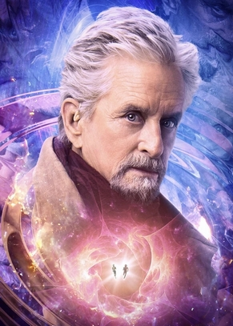
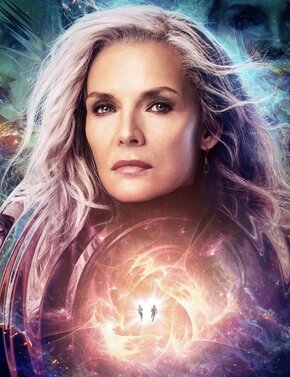
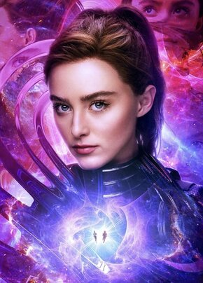

Characters
Scott Lang
Alias: Ant-Man
Portrayed By: Paul Rudd
Appearances: Ant-Man (2015), Captain America: Civil War (2016), Ant-Man and the Wasp (2018), Avengers: Endgame (2019), Ant-Man and the Wasp: Quantumania (2023)
Scott Lang is a former thief who is recruited by Hank Pym to take on the superhero mantle of Ant-Man. Fresh out of prison, Scott took the job in order to make up for lost time with his daughter. After a successful heist, Scott is recruited by Sam Wilson (aka Falcon) to join Captain America’s side in the Clash of the Avengers battle in Germany. Following this incident, he is placed on house arrest while Hank Pym and Hope Van Dyne cut contact with him. Scott spends the next two years carrying out his house arrest, until Hank and Hope need his assistance once more in order to carry out a new mission. He’s able to repair his relationship with them, and they shift to a new normal until Scott gets trapped in the Quantum Realm. Suiting up as Ant-Man after his escape, Scott assisted the Avengers when they went on the search for Infinity Stones to restore Thanos’s snap that dusted half the universe. The reverse snap was successful, and Scott also participated in the battle that followed. He celebrated their victory with Hope and Cassie, and later attended Tony Stark’s funeral. Over the next few years, Scott would write and publish a book, as well as spend time with his family. Quantumania follows Scott as he tries to protect his now-adult daughter from a threat she doesn’t quite understand yet.

Hope Van Dyne
Alias: Wasp
Portrayed By: Evangeline Lilly
Appearances: Ant-Man (2015), Ant-Man and the Wasp (2018), Avengers: Endgame (2019), Ant-Man and the Wasp: Quantumania (2023)
Hope Van Dyne is introduced into the franchise as an independent business woman with a strained relationship with her father. She confides in Hank once she realizes that what Darren Cross is doing is dangerous, and later resentfully trains Scott to succeed at the mission she believes she’s more suited for. After she proves herself capable to Hank, she takes up the mantle of her mother as the Wasp. Hope and Scott learn to be partners while carrying out the mission to bring Janet back, and later falls victim to the snap, along with her parents. She joins Scott in the final battle to defeat Thanos for good after the resurrection. In Quantumania, Hope has reestablished Pym Technologies, her father’s company, into the Pym Van Dyne Foundation, where she aids those in need in all the ways she can. She also grows to learn that her mother is keeping secrets for good reason.

Henry "Hank" Pym
Alias: Ant-Man (formerly)
Portrayed By: Michael Douglas
Appearances: Ant-Man (2015), Ant-Man and the Wasp (2018), Avengers: Endgame (2019), Ant-Man and the Wasp: Quantumania (2023)
Ant-Man has Hank discover Scott Lang and decide that he’s the right person to carry out the heist to stop Darren Cross. Although Hope believes she’s more suited for the role, Hank is terrified of losing her in the same way he lost her mother. He continues his research on the Quantum Realm until he’s able to create a Quantum Tunnel to rescue Janet, from the help of some old rivals. Hank, with the assistance of Scott and Hope, is able to reunite with his wife after 30 years, but is later dusted with both Hope and Janet. After being resurrected, he attends the funeral of Tony Stark with Janet, Scott, and Hope. He connects with Scott’s daughter Cassie over the following years due to her interest in his research and the Quantum Realm, and joins his family on their adventure in the subatomic universe.
Janet Van Dyne<
Alias: Wasp (formerly)
Portrayed By: Michelle Pfeiffer
Appearances: Ant-Man and the Wasp (2018), Avengers: Endgame (2019), Ant-Man and the Wasp: Quantumania (2023)
Janet disappeared into the Quantum Realm following a mission she was on with Hank. She spent the next 30 years in the Quantum Realm until Hank was able to rescue her in 2018. Although her family was very interested in the Quantum Realm, she remained silent of its mysteries as she just wanted to have her life with her family back. She attended Tony Stark’s funeral with Hank, Hope, and Scott, and spent the next few years living her life in San Francisco. Quantumania shows what secrets Janet was so desperate to keep hidden, and what happens when her family realizes why.
Cassie Lang
Alias: Unknown
Portrayed By: Abby Ryder Fortson, Emma Furhmann, Kathryn Newton
Appearances: Ant-Man (2015), Ant-Man and the Wasp (2018), Avengers: Endgame (2019), Ant-Man and the Wasp: Quantumania (2023)
Cassie is a pivotal character in the franchise, although her involvement isn’t as deep until Quantumania. She is Scott’s motivation for getting through the missions or heists he’s put up to, and encourages him in the ways she can along the way. Cassie is a survivor of the Snap, meaning when Scott was able to escape, she had aged five years and had a growing interest in the Quantum Realm. Before the events of Quantumania, Cassie connects with Hank and Hope as they encourage her interest in the subatomic mysteries. At some point, she’s presented with her own size-manipulating suit, unbeknownst to her father. She learns to be a superhero through the adventure she experiences with her family in the Quantum Realm as they face the greatest threat they have ever encountered.
